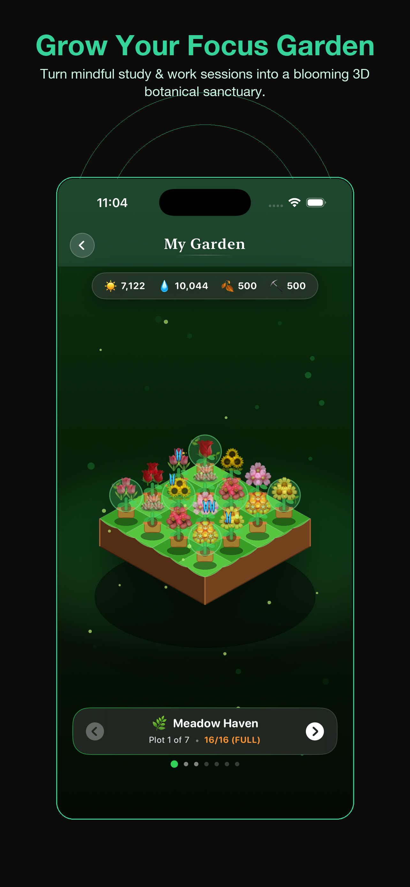
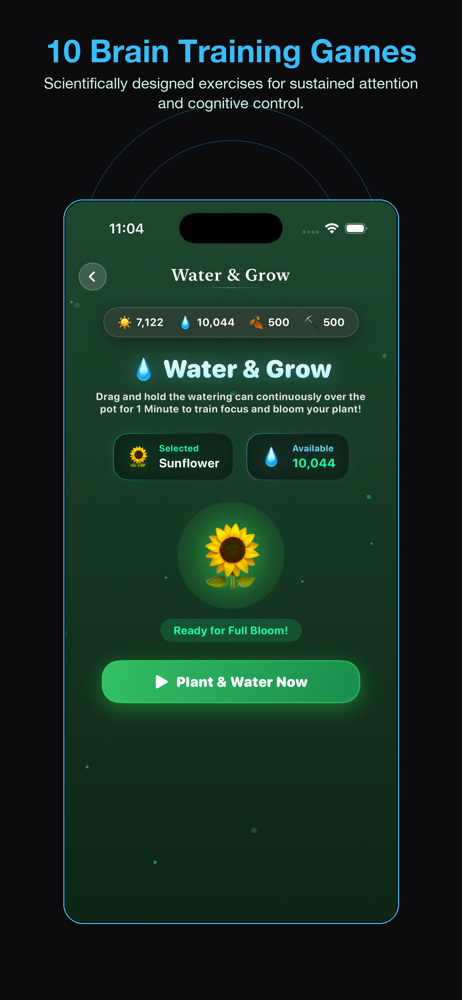
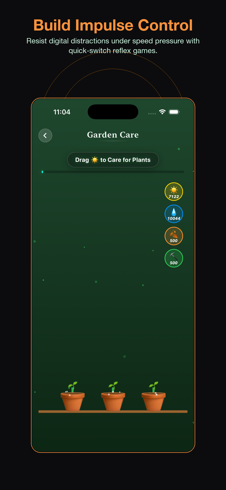
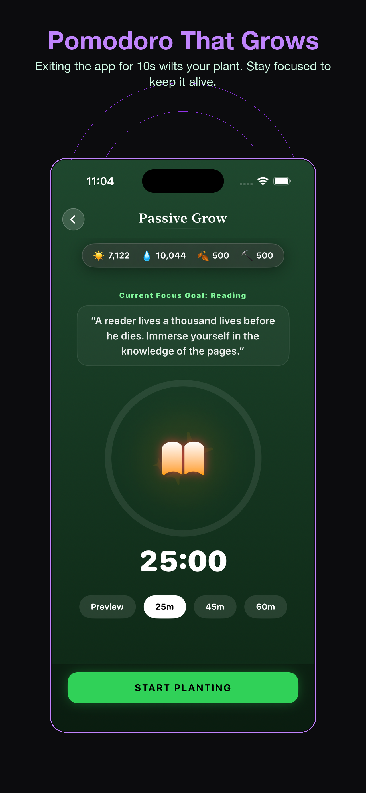
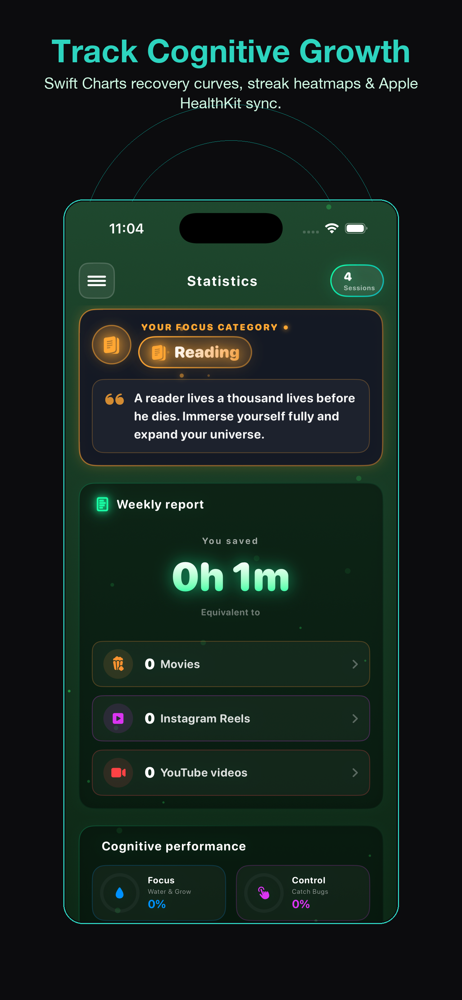

Pomodoro Timer - Grow Focus
Sunshine Studios • Health & Productivity
A Pomodoro timer. A growing focus garden.
A Pomodoro timer with a growing 3D garden and ten attention games. Set a work session, stay with it, and earn resources for your plants.
iOS 26+ • Focus Session History • See privacy details





Make room for focused work.
A garden for your next Pomodoro
Use timed work sessions, grow a 3D garden and take a break with attention games.
- Made for
- iPhone focus sessions
- Access
- Free download; optional Pro and ads. Current offers appear in the app.
Where Focus Becomes Flora
Every minute of deep work produces solar energy and rainwater drops. Cultivate rare botanical species across 7 breathtaking isometric island biomes.
7 Themed Biomes
From Meadow Haven and Zen Bonsai to Sakura Peak and Cyberpunk Neon Garden, rotate and zoom inside interactive SpriteKit and Metal scenes.
Dynamic Resource Engine
Collect water drops during rainstorms, harvest sunlight tokens, and compose nutrient compost to accelerate plant growth stages.
Living Ambient Fauna
Watch butterflies flutter across petals, fireflies twinkle in dark mode, and fish swim in crystal ponds as your garden blooms.
10 Attention Games
Strengthen the 5 pillars of executive cognition: sustained focus, impulse control, working memory, cognitive flexibility, and stress regulation.
| Game Room | Cognitive Target | Neuropsychology Mechanism |
|---|---|---|
| Hold Focus | Sustained Attention | Smooth pursuit tracking with dynamic trajectory drift |
| Don't Tap | Impulse Inhibition | Go / No-Go cognitive inhibition under rapid time pressure |
| Rule Switch | Task Switching Agility | Cognitive set shifting across color and shape sorting rules |
| Remember & Act | Working Memory Load | N-Back spatial memory and sequential recall testing |
| Breathing Focus | Parasympathetic Regulation | 4-7-8 and box breathing with synchronized haptic pacing |
| Find Target | Selective Visual Search | Feature pop-out and high-speed botanical distractor scanning |
| Speed Match | Processing Velocity | Rapid visual perceptual comparison and reaction time |
| Rhythm Tap | Temporal Pacing | Internal interval timing and motor response coordination |
| Interrupt & Return | Distraction Recovery | Simulated sensory interruption and rapid task resumption |
| Focus Endurance | Vigilance Decrement Resistance | Prolonged cognitive stimulus detection and fatigue reduction |
Focus with Real Accountability
Traditional timers make it too easy to click away. GrowFocus introduces tangible stakes that make distraction an active choice.
Anti-Wilt Protection
Switching to Instagram or TikTok for ≥ 10 seconds immediately wilts your plant. Keep your streak alive by staying in your flow state.
Apple Health Sync
With your permission, supported completed focus and breathing sessions can be recorded in Apple Health as mindful minutes.
Clear privacy information
Your thoughts and stats belong to you. Core progress stays on your device or in supported Apple services. Firebase Analytics and AdMob process usage and advertising data. Read the privacy policy for details.
Master Your Focus & Deep Work
Actionable playbooks covering remote work concentration, smartphone impulse control, Pomodoro mechanics, and deep work routines.
How to Focus When Working From Home
Conquer spatial bleed and domestic distraction. Master micro-zoning, the fake commute ritual, ultradian rhythm pacing, and anti-wilt stakes.
How to Stop Checking Your Phone While Working
Break the smartphone compulsion loop. Discover the two-room rule, grayscale filters, urge surfing, attention residue science, and loss aversion stakes.
Pomodoro Technique for Beginners
The complete 25/5 blueprint. Learn what to do during breaks, how to preserve deep flow states, and modern gamified botanical adaptations.
How to Build a Deep Work Routine
Transform deep concentration into an automatic daily habit. Understand neural myelination, the 4 scheduling philosophies, and shutdown rituals.
Best Focus Techniques for Remote Workers
Compare the 8 most powerful focus frameworks: maker vs manager schedules, 3x async batching, and executive attention warmups.
Explore All Guides
Visit the complete GrowFocus Knowledge Hub for comprehensive evidence-based focus resources.
Browse Hub →App availability
Current App Store version: 1.0.6. See the App Store listing for the latest release notes, device compatibility and local availability.
View current App Store details →Everything You Need to Know
How does the GrowFocus anti-wilt Pomodoro timer work?
When you start a session, your timer grows a botanical sapling. Leaving the app for 10 seconds or more triggers the wilt protocol. This subtle consequence trains your mind to resist mindless phone unlocks.
Are the 10 games suitable for ADHD adults and students?
The attention games offer structured practice and short breaks. GrowFocus is a productivity tool, not a diagnosis or treatment for ADHD or another medical condition.
Does GrowFocus collect any personal health data?
Core progress stays on-device or in supported Apple services. Firebase Analytics and AdMob also process technical usage and advertising information. Apple Health access requires permission. Read the privacy policy for the details.
Is GrowFocus available in my language?
Yes! GrowFocus is fully localized across 10 global languages: English, German, Japanese, Simplified Chinese, Traditional Chinese, Korean, French, Spanish, Italian, and Brazilian Portuguese.